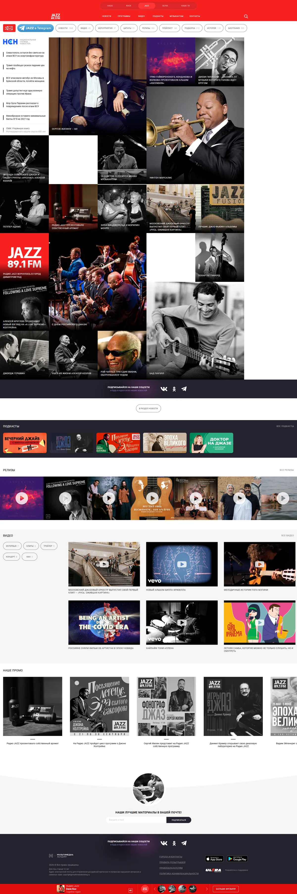
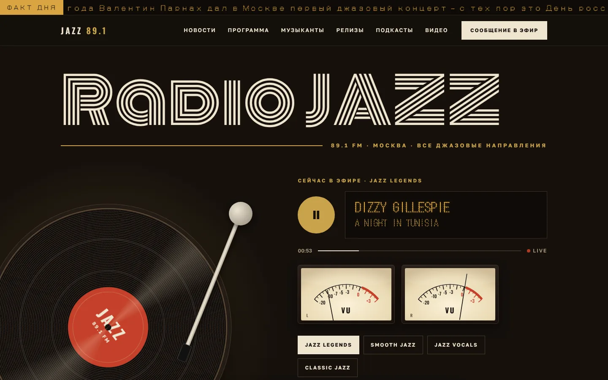
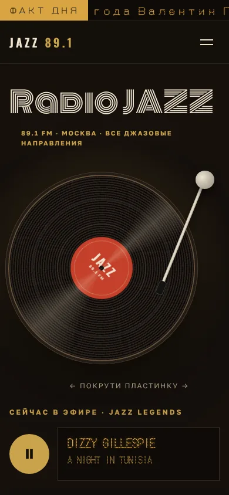
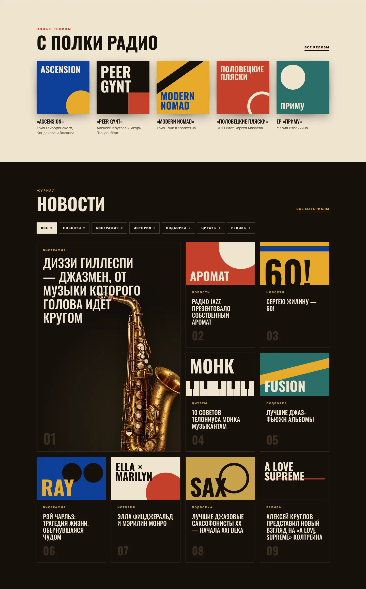

- Демо
- О концепте
Кейс · инициативный редизайн
Сайт,
который звучит
Концепт нового сайта Радио JAZZ 89.1 FM: эфир — главный герой, а интерфейс говорит на языке джаза — винил, ламповое табло, обложки в духе пластинок 50-х.
01
Задача
Сделать по собственной инициативе концепт сайта для Радио JAZZ: такой, чтобы атмосфера джаза ощущалась с первого экрана, а слушать эфир хотелось сразу. Контент — настоящий: новости, релизы, подкасты и видео взяты с текущего сайта радио.
02
Что мешало
- Одна платформа на четыре станцииСайт общий с НАШЕ, ROCK FM и ULTRA: плеер, формы и футер рассчитаны на всех сразу, а не на джаз.
- Чужая повесткаЛента новостей nsn.fm с политикой и происшествиями посреди джазового портала ломает настроение.
- Эфир на втором планеГлавное у радио — эфир, но плеер прижат к краю экрана и спрятан в общую конструкцию.
- Нет фокусаДлинная главная из равнозначных блоков; промо 2019 года стоит рядом со свежими новостями.
- Сильный контент теряется535 биографий и сотни релизов скрыты за тегами-счётчиками.
- Визуал не про джазСильные фотографии тонут в плотной мозаике, а красный цвет и интерфейс общие для всех станций холдинга — джазовой атмосферы нет.

03
Поиск стиля
Blue NoteОбложки 50-х: тяжёлая типографика, плашки цвета, геометрия.Ушло в релизы и новости
Клуб после полуночиТемнота, неоновая вывеска, LED-табло.Взяли надпись и табло
ВинилВертушка, тёплый свет, пластинка как главный объект.Основа концепта
Сет-листГлавная как программа вечера в клубе.Отказались: похоже на меню
Первый микс «клуб + винил + Blue Note» вышел слишком неоновым: розовое свечение читалось как современный бар, а не джаз. Во втором варианте неон убрали, оставив от клуба только многолинейную надпись и янтарное табло, а пластинку сделали главным героем первого экрана.
04
Система
Ночь
#15100CКрем
#EFE4CFЛатунь
#C9A24AНаклейка
#C4402ABlue
#0E3F9AГорчица
#E6A92BЛоготипRadio JAZZ
ЗаголовкиOswald — С полки радио
ТаблоDOTGOTHIC16 — СЕЙЧАС В ЭФИРЕ
ТекстGolos Text — спокойный шрифт для чтения, с полноценной кириллицей.
05
Фишки
- Игла опускается по нажатию Play, пластинка разгоняется до 33⅓
- Скретч: пластинку можно крутить мышкой или пальцем
- Треск винила генерируется в браузере, без аудиофайлов
- VU-метры со стрелками на пружинной физике
- Табло печатает трек по буквам
- Пластинка выезжает из конверта при наведении на релиз
- Программа эфира с отметкой «сейчас»
- Факт дня бегущей LED-строкой
- Энциклопедия с поиском, алфавитом и фильтром
- Пасхалка: набери на клавиатуре «jazz»
06
Результат


